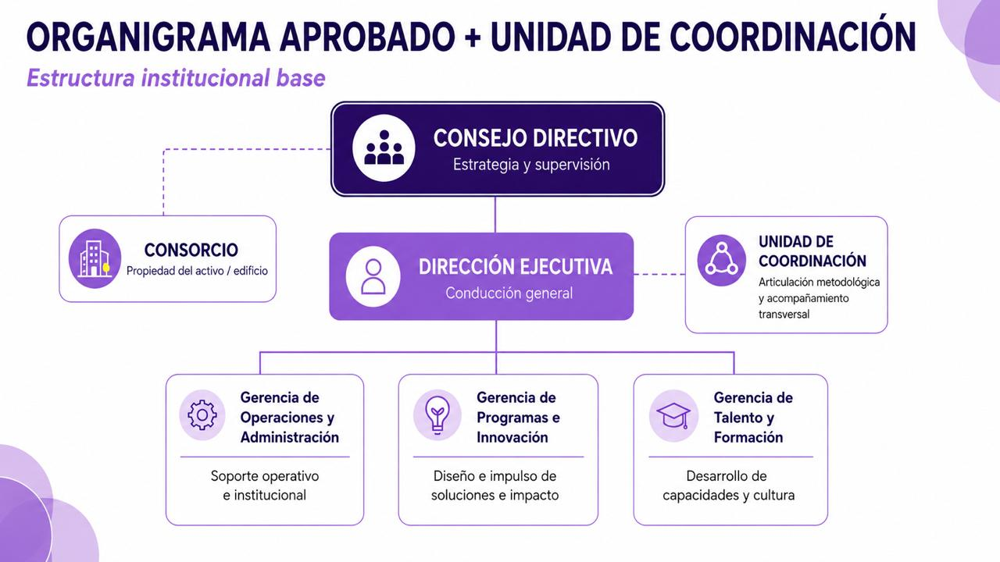
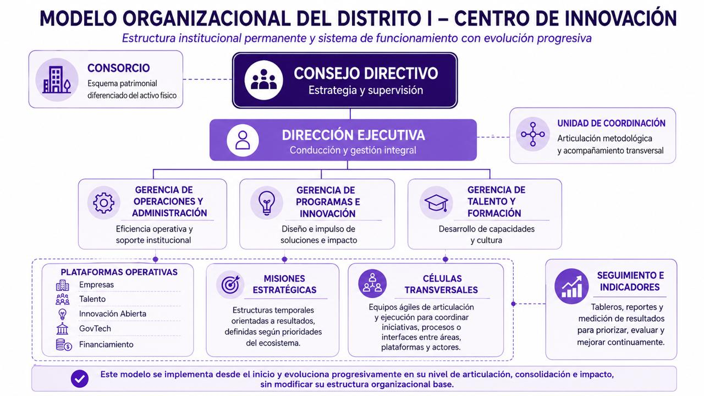

Proyecto
Distrito I - Corrientes
Mayo 2026
La estructura institucional aprobada se mantiene:

Es un órgano de staff que coordina las misiones estratégicas del Centro.
| Función | Descripción |
|---|---|
| Gestión de misiones | Coordina las misiones estratégicas en ejecución |
| Seguimiento | Mantiene dashboard de progreso y KPIs |
| Coordinación | Facilita trabajo entre gerencias |
| Reporting | Reporta a Dirección Ejecutiva |
Composición:
El Centro opera con modelo matricial. Las personas trabajan para su gerencia de origen y para las misiones estratégicas según la asignación definida.
Cada misión tiene un líder responsable que coordina un equipo con personas de distintas gerencias.
Gobernanza:
La estructura organizacional se completa progresivamente según las misiones que se lanzan:
Estructura formal operativa
PMO activo
2 misiones piloto
Portfolio de 4-5 misiones
PMO expandido
Modelo matricial consolidado
5-6 misiones
Vínculos ecosistémicos
Estructura madura
| Momento | Acción |
|---|---|
| Mes 1 | Contratar Director Ejecutivo y Gerentes Contratar Coordinador PMO Seleccionar primeras misiones |
| Mes 2 | Nombrar líderes de misión Formar equipos Lanzar misiones |
| Mes 3 | Dashboard activo Primeros reportes de progreso |
| Mes 6 | Evaluación de resultados Decisión sobre expansión |
Diagrama completo del modelo organizacional implementado:
